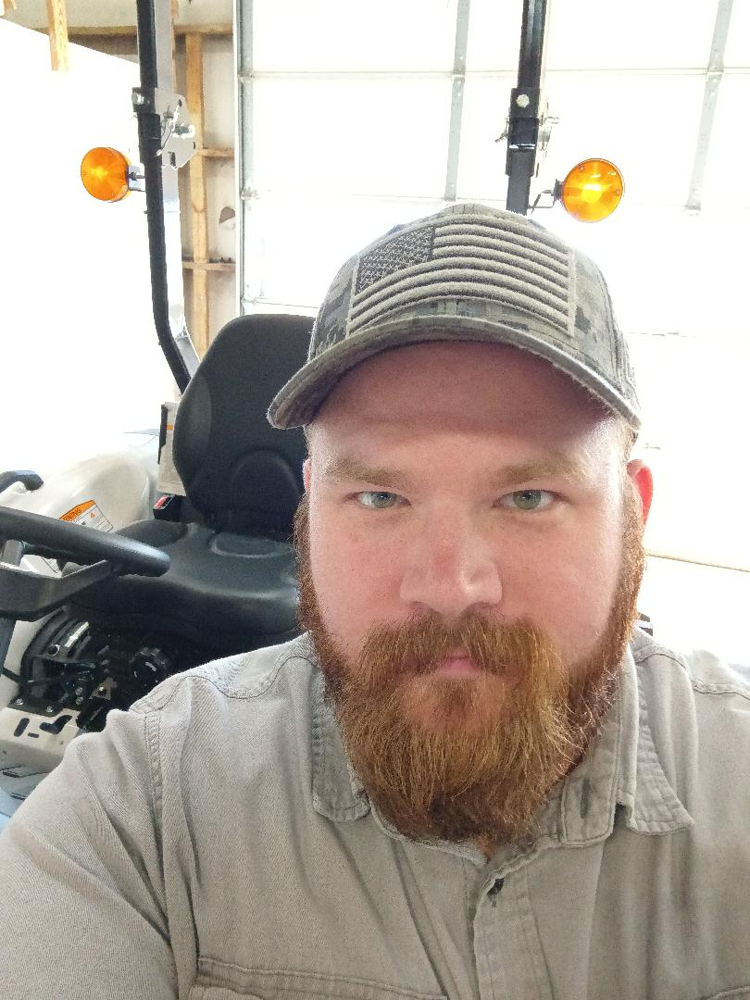

Mason

Summary
I am a dedicated professional with a diverse skill set. A "jack of all trades" with the ability to adapt to ever changing technologies and skill requirements.
Education
Aviation Maintenance Technologies - Midsouth Community College(2012-2014)
Work Experience
-
Bobcat of Maury Co.
2022-Present
- Maintain customer equipment
- Perform "Pre-Delivery Inspections" of equipment
- Advise customers on necessary maintenance items
- Coordinate with managment to insure proper inventory
-
Oliver Travel Trailers
2020-2022
- Maintained customer trailers
- Performed "Pre-Delivery Inspections" of trailers
- Provided customer service and education
-
Embraer Aircraft Maintenance Service
2017-2020
- Performed routine and non-routine maintenance on passenger aircraft in accordance to applicable FAA regulations
- Maintained records and documentation in accordance with FAA regulations
- Coordinated with various crews to complete complex projects
Skills
- Attention to detail
- Customer Service
- Documentation
- Reading schematics/technical documents
- Teamwork
- Use of calibrated tooling
- Use of power tools
- Use of hand tools
Awards and Certificates
- Airframe and Powerplant Certification
Other